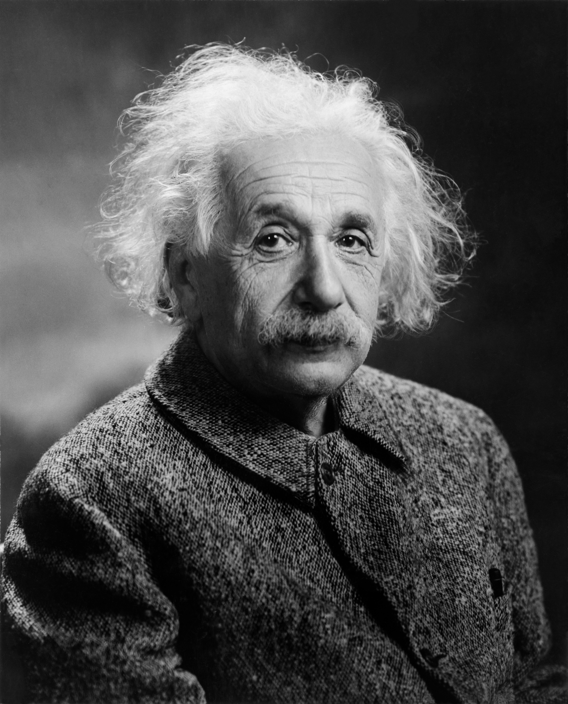
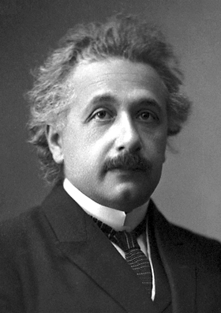
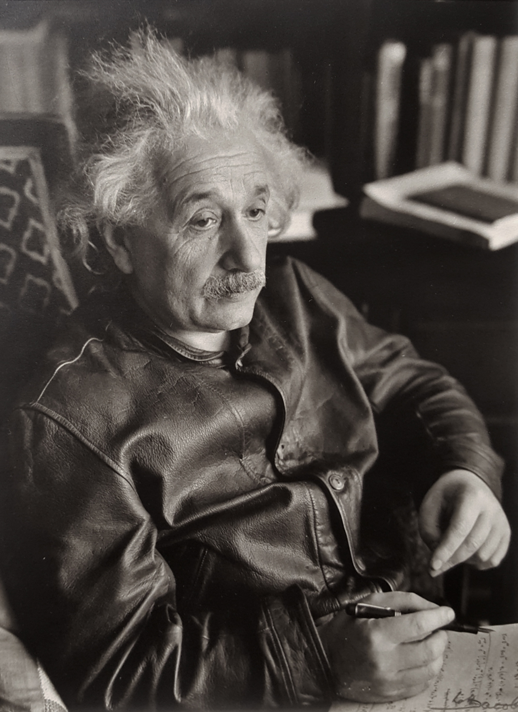
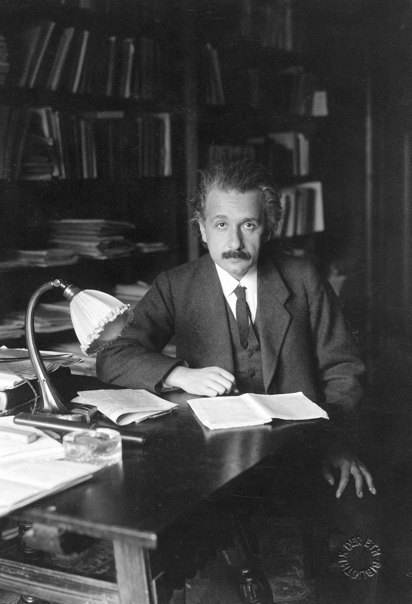
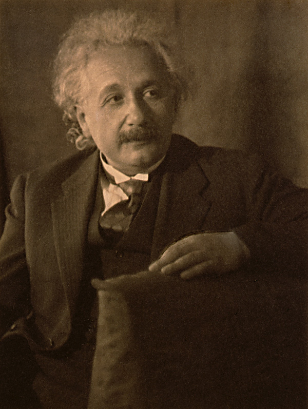
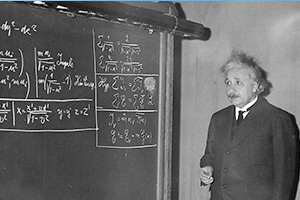
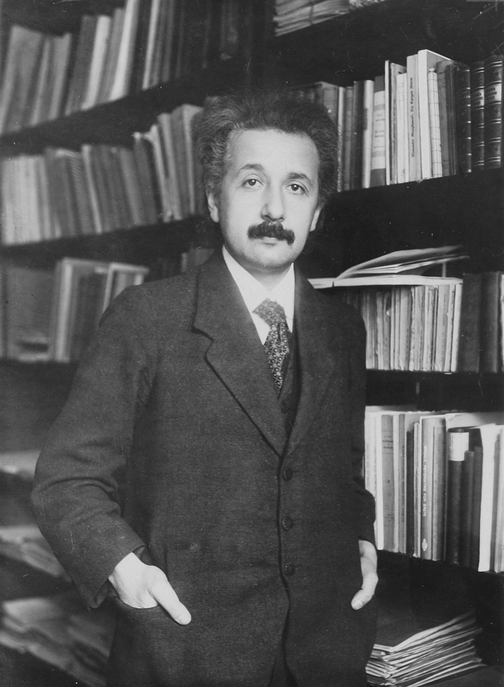
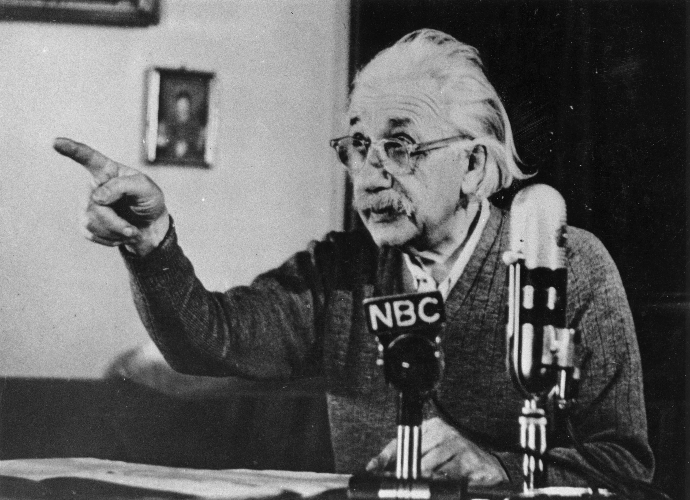
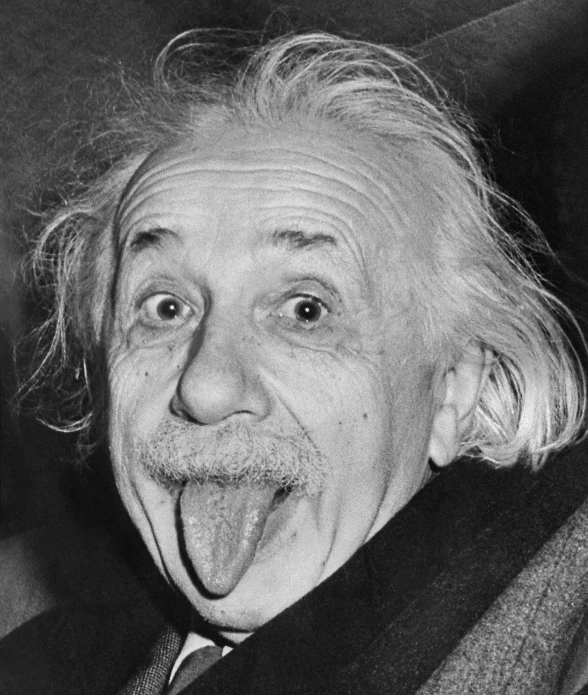
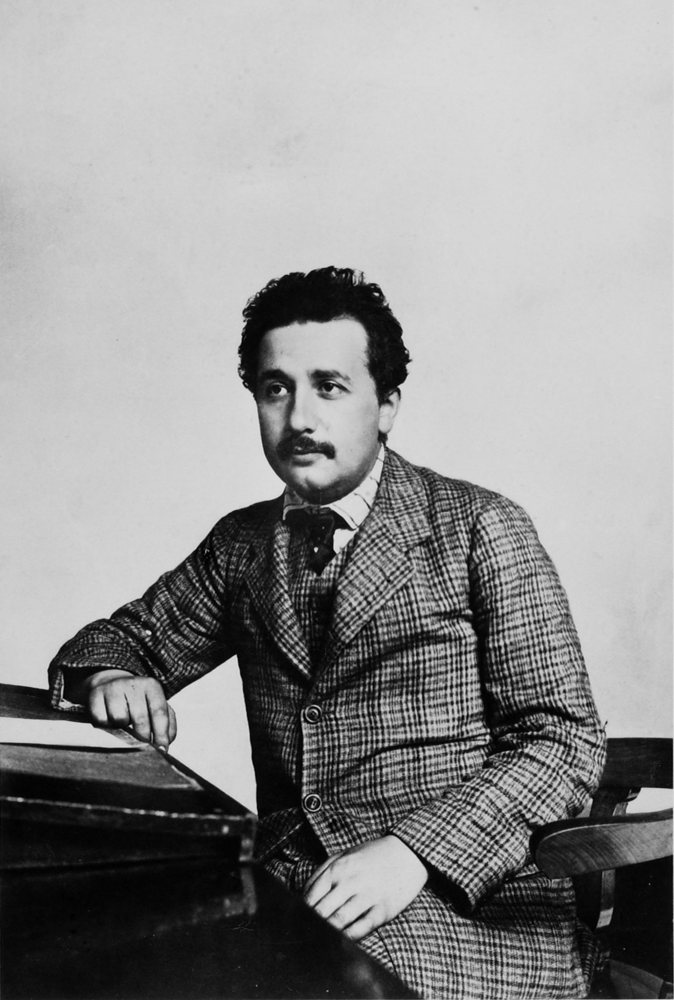

My Gallery










Theory of Relativity

Welcome to my website! Here you will find many of my best work, learn about my life, some of my personal interests, and best of all, photos of me!
Albert Einstein is a theoretical physicist that infamously developed the theory of relativity. His dicoveries help change how scientists understand space, time, gravity, and energy. He also recieved a well deserved Nobel Prize in Physics in 1921.
Nobel Prize
Mass and Energy
Scientific Theory
On a Heuristic Point of View about the Creation andConversion of Light (1905)
Research on how light interacts with matter.
Read MeInvestigations on the theory of the Brownian movement (1956)
Research explaining the movement of tiny particles.
Read MeElectrodynamics of moving bodies (1905)
Research about the relationship between time and space.
Read MeConsiderations Concerning the Fundaments of Theoretical Physics (1940)
Research about his discovery about the famous equation E = MC^2
Read MeIst die Trägheit eines Körpers von seinem Energieinhalt abhängig? (1905)
Research about whether an object's mass is related to the amount of energy it contains
Read MeÜber die im elektromagnetischen Felde auf ruhende Körper ausgeübten ponderomotorischen Kräfte
Research on how electromagnectic fields exert forces on objects that are not moving
Read Me








The most important thing about science and learning is Curiosity. Asking questions allow people to explore new ideas, make discoveries, and better understand the world.
Science is more than just finding answers, it is about exploring possibilities, being creative, and never ever being afraid to ask questions. Every discovery begins with CURIOSITY